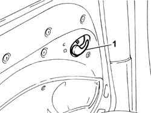
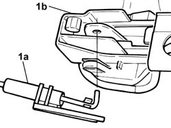
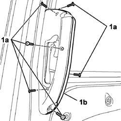
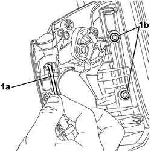

7020D34 sliding door interior handle - r+r
- Path
- Procedures > 70 FITTINGS > 7020 LOAD CARRYING COMPARTMENT DOORS > 7020D sliding door closure devices > 7020D34 sliding door interior handle - r+r
- Kind
- repair procedure (removal / refitting; the operation number is the code)
- Applies to
- all engines; all production periods
- Interactive page
- https://sloeber94.github.io/elrnDB-fDbl/en/#/2585067
Applies to: all engines; all production periods
 Removing
Removing
 Refitting
RefittingOp. 7020D68 TRIM FOR LOCK IDLER FOR ONE SLIDING SIDE DOOR, LEFT OR RIGHT - R.R.
Op. 7020C30 SLIDING DOOR INTERIOR PANEL LEFT OR RIGHT - R+R
1. Remove the handle from its seating.

Applies to: all engines; all production periods
1. Remove the flexible cable (1a) from the handle (1b).

Applies to: all engines; all production periods
Refitting
RemovingConnect the flexible cable to the handle.
Fit the handle in its seating.
Op. 7020C30 SLIDING DOOR INTERIOR PANEL LEFT OR RIGHT - R+R
Op. 7020D68 TRIM FOR LOCK IDLER FOR ONE SLIDING SIDE DOOR, LEFT OR RIGHT - R.R.
Applies to: engines: 1.6 16v, 1.3 JTD 16V, 1.9 JTD 8V; all production periods; only with equipment: 7 seater
Removing
Refitting1. Undo bolts (1a) and remove half-shell (1b).

Applies to: engines: 1.6 16v, 1.3 JTD 16V, 1.9 JTD 8V; all production periods; only with equipment: 7 seater
1. Release the link end section (1a), unscrew the door bolts (1b) and remove the interior handle.

Applies to: engines: 1.6 16v, 1.3 JTD 16V, 1.9 JTD 8V; all production periods; only with equipment: 7 seater
Refitting
RemovingPosition the internal handle half-shell in its seat and secure with the bolts.
Attach the lock control link end section.
Position and secure the other half-shell covering the interior handle by tightening the bolts.
Topics linked from this page (2)
- 7020C30 sliding door interior panel - r+r
- 7020D68 lock return device panel for sliding side door, l.h. or r.h. - r r